概率最早出现人类的赌博中。1651年，赌徒梅雷爵士向法国数学家帕斯卡(Blaise Pascal)提出了“赌金分配”问题：两个赌徒下了相同赌注，约定先获胜3局的一方获得全部赌金。在A胜2局、B胜1局的情况下，由于一方有事，赌局不得不结束，那么赌金该如何分配呢？随后，帕斯卡与同胞费马(Pierre de Fermat)开始了关于赌博问题的一系列通信。人们通常认为，正是这两个法国人的工作开创了数学中最有趣的分支之一——概率论。
对于“赌金分配”问题，解答是这样的：A赢得下一局，以3∶1获胜的可能性是50%，赌局结束；B赢得下一局，双方打成2∶2的可能性为50%，赌局继续进行决胜局，A和B以3∶2赢得最终胜利的可能性各为25%，赌局结束。所以，A赢得比赛的可能性(概率)是50%＋25%＝75%，应该得到赌金的75%，B得到25%。
某些现象，在个别试验中其结果呈现出不确定性，而在大量重复试验中其结果又具有统计规律性，这些现象称为“随机现象”。
一个试验称为“随机试验”，是指它具有以下3个特点：
1．可以在相同条件下重复进行。
2．每次试验的可能结果可以不止一个，并且能事先明确试验的所有可能结果。
3．进行一次试验之前不能确定哪一个结果会出现。
某个随机试验所有可能的结果的集合称为“样本空间”，一般记为S。S的元素即为试验的每个结果，称为“样本点”。一般都假设S由有限个元素组成，S的子集称为“随机事件”，简称“事件”。
在每次试验中，当且仅当这一子集中的一个样本点出现时，称这一事件“发生”。由一个样本点组成的单个元素的集合，称为“基本事件”。
S是自身的一个子集，在每次试验中它是必然发生的，称为“必然事件”。空集?也是S的一个子集，它在每次试验中都不可能发生，称为“不可能事件”。
事件A∪B称为事件A与事件B的和事件，当且仅当事件A和事件B至少有一个发生时，事件A∪B发生。A∪B有时也记作A+B。
事件A∩B称为事件A与事件B的积事件，当且仅当事件A和事件B同时发生时，事件A∩B发生。A∩B有时也记作AB或A·B。
当有多个事件时，和事件和积事件一般可以分别表示成：
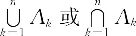
。如果A∩B=Ø，称事件A与事件B互不相容（或互斥），即指事件A与事件B不能同时发生，基本事件是两两互不相容的。
如果A∪B=S，且A∩B=Ø，称事件A与事件B互为对立事件（互为补集），即对每次试验，事件A与事件B必有一个且仅有一个发生。
如果在相同的条件下进行了n次试验，在这n次试验中，事件A发生了NA 次，那么比值NA /n称为事件A发生的“频率”。
在大量重复进行同一试验时，事件A发生的频率总是在某种意义下接近某个常数（实数），在它附近摆动，这个常数就是事件A的概率P（A）。
概率具有以下几个性质：
（1）非负性：对于每一个事件A，0≤P（A）≤1。
（2）规范性：对于必然事件S，P（S）=1。对于不可能事件S，P（S）=0。
（3）容斥性：对于任意两个事件A和B，P（A∪B）=P（A）+P（B）-P（A∩B）。
（4）互斥事件的可加性：设A1 ，A2 ，…An 是互斥的n个事件，则P（A1 ∪A2 ∪…An ）=P（A1 ）+P（A2 ）+…P（An ）。如果A和B互为对立事件，则事件A和B一定是互斥的，而A∪B为必然事件，所以，P（A∪B）=P（A）+P（B）=1，即对立事件概率之和为1。
（5）独立事件的可乘性：如果事件A是否发生对事件B发生的概率没有影响，同时事件B是否发生对事件A发生的概率也没有影响，则称A与B是相互独立的事件。有P（A∩B）=P（A）*P（B），即两个相互独立事件同时发生的概率等于每个事件发生的概率的积。推广到n个相互独立的事件，P（A1 ∩A2 ∩…An ）=P（A1 ）*P（A2 ）*…P（An ）。
（6）独立重复试验的“伯努利大数定理”：如果在一次试验中某事件发生的概率为p，不发生的概率为q，则在n次试验中该事件至少发生m次的概率等于（p+q）n 的展开式中从pn 到包括pm qn -m为止的各项之和。如果在一次试验中某事件发生的概率为p，那么在n次独立重复试验中这个事件恰好发生k次（0≤k≤n）的概率为：
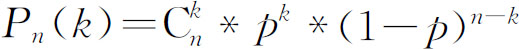
。【例4.1-1】 找东西的疑惑
【问题描述】
书桌有8个抽屉，分别用数字1～8编号。每次拿到一个文件后，我都会把这份文件随机地放在某一个抽屉中。但，我非常粗心，有1/5的概率会忘了把文件放进抽屉里，最终把这个文件弄丢。现在，我要找一份非常重要的文件，我将按照顺序打开每一个抽屉，直到找到这份文件为止，或者悲催地发现被我弄丢了。请计算下面3个问题的答案：
1．假如我打开了第一个抽屉，发现里面没有我要的文件。那么，这份文件在其余7个抽屉里的概率是多少？
2．假如我翻遍了前4个抽屉，里面都没有我要的文件。那么，这份文件在剩下的4个抽屉里的概率是多少？
3．假如我翻遍了前7个抽屉，里面都没有我要的文件。那么，这份文件在最后一个抽屉里的概率是多少？
【问题分析】
请猜一下：这3个概率是越来越大、还是越来越小？答案分别是7/9，2/3，1/3。也就是说这个概率在不断减小，这个好像与我们的直觉相反，一般会感觉，前面的抽屉里越是没有，在后面抽屉里的概率就越大。所以，有时直觉也是一种错觉，不可靠!
根据1/5的“弄丢”概率，也就是平均10份文件就有2份弄丢，其余8份平均到了8个抽屉里。假设那2份丢掉的文件我找了回来，也分别占用1个抽屉，那么什么情况？也就是把问题增加2个虚拟的抽屉9、10，专门放丢掉的文件。那么，题目就等价于：随机把文件放到10个抽屉里，但找文件时不允许打开最后2个抽屉，现在分别求：找过了n个抽屉但没有发现我的文件时，这份文件在其余10-n个抽屉里、但是我只能打开其中前8-n个抽屉的概率，答案显然为：（8-n）/（10-n）。当n＝1、4、7时，概率分别为7/9、2/3、1/3。进一步，我们把（8-n）/（10-n）化简成1-2/（10-n），就很容易发现，这是一个递减函数（在0≤n≤8时），所以，概率是越来越小的。
概率依其计算方法不同，可分为古典概率、试验概率和主观概率。古典概率通常又叫事前概率，是指当随机事件中各种可能发生的结果及其出现的次数都可以由演绎或外推法得知，而无需经过任何统计试验即可计算各种可能发生结果的概率。
人们最早研究概率是从掷硬币、掷骰子和摸球等游戏和赌博中开始的。这类游戏有几个共同特点：一是试验的样本空间有限，如掷硬币有正反两种结果，掷骰子有6种结果等；二是试验中每个结果出现的可能性相同，如硬币和骰子是均匀的前提下，掷硬币出现正反的可能性各为1/2，掷骰子出出各种点数的可能性各为1/6；三是这些随机现象所能发生的事件是互不相容的，比如掷硬币的结果要么是正面、要么是反面，不可能同时发生。具有这几个特点的随机试验称为古典概型或等可能概型。计算古典概型概率的方法称为概率的古典定义或古典概率。
在计算古典概率时，如果在全部可能出现的基本事件范围内构成事件A的基本事件有a个，不构成事件A的事件有b个，则出现事件A的概率为：P(A)=a/(a+b)。
【例4.2-1】 红色笔
【问题描述】
在40支圆珠笔中有30支黑色的，另外10支是红色的。从中任意取出4支，计算其中至少有1支红色笔的概率。
【问题分析】
设从40支笔中任取4支，恰有1支、2支、3支、4支红笔的事件分别记为A、B、C、D。则：
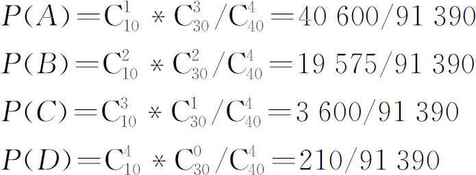
根据题意，事件A、B、C、D两两互斥，所以P(A∪B∪C∪D)=P(A)+P(B)+P(C)+P(D)=63985/91390≈0.7。
本题也可以从对立事件的概率来分析，设从40支笔中取4支全是黑色的事件为A，则
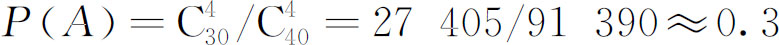
。所以，P(A)的对立事件的概率为1-P(A)≈0.7。【例4.2-2】 罚球
【问题描述】
有甲、乙两个篮球运动员，假设他们的罚球命中率分别是60%和50%，现在两人各罚球一次，正常情况下，请计算：
1．两人都命中的概率。
2．只有1人命中的概率。
3．至少有1人命中的概率。
【问题分析】
两人投篮的事件（假设甲投中的事件用A表示、乙投中的事件用B表示）是相互独立的，用A 、B 分别表示甲、乙未投中的事件，所以：
1．P(A∩B)=P(A)*P(B)=0.6*0.5=0.3
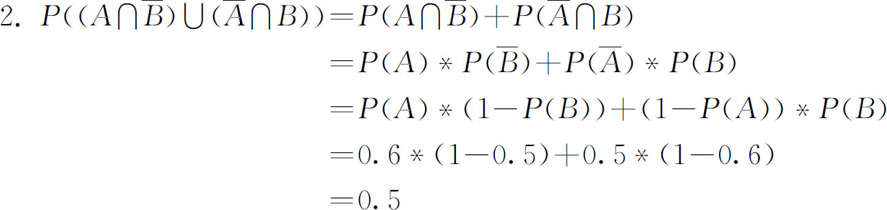
3．上面两项的和：0.3+0.5=0.8
【例4.2-3】 银行密码
【问题描述】
某银行储蓄卡的密码是6位数字号码，每位上数字均可取0到9这10个数字。某人忘记了他的确切密码。请计算：
1．如果他随意按下一组6位数字号码，正好按对密码的概率是多少？
2．如果他记住密码中只含有1、2、3，那么他按一次密码，正好按对的概率又是多少？
3．如果他记住密码中只含有一个1、两个2、三个3，那么他按一次密码，正好按对的概率又是多少？
【问题分析】
1．按对的情况只有一种，总共106 种，所以答案是1/106 。
2．因为每次只会去按1、2、3三个键了，所以答案是1/36 。
3．因为只会去按1次1、2次2和3次3，所以共有
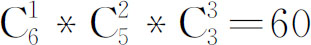
种按法，所以答案是1/60。【例4.2-4】 骰子(dice.*，64MB，1秒)
【问题描述】
众所周知，骰子是一个六面分别刻有一到六点的立方体，每次投掷骰子，从理论上讲得到一点到六点的概率都是1/6。
今有骰子一颗，连续投掷N次，问点数总和大于等于X的概率是多少？
【输入格式】
输入文件一行两个整数，分别表示n和x，其中1≤N≤24，0≤x<150。
【输出格式】
输出文件一行一个分数，要求以最简的形式精确地表达出连续投掷N次骰子，总点数大于等于X的概率。如果是0/1就输出0，如果是1/1就输出1。
【输入样例】
3 9
【输出样例】
20/27
【问题分析】
模拟投掷的过程去递推：从投掷一次开始，将可能出现的点数不断累加。最后再除以每个点数的总和，即为每个点数可能出现的概率。
【参考程序】
#include<cstring>
#include<iostream>
using namespace std;
const int maxn=24;
long long F［2］［6 * maxn+1］，total，larger;
long long gcd(long long a，long long b){
long long r=a % b;
while (r){
a=b;
b=r;
r=a % b;
}
return b;
}
int main(){
int n，x;
cin>> n >> x;
memset(F，0，sizeof (0));
F［0］［0］=1;
total=1;
for (int i=1; i <=n; i++）{
total *=6; for (int j=0; j <=i * 6; j++）F［i & 1］［j］=0;
for (int j=0; j <=(i-1)*6; j++)
for (int k=1; k <=6; k++)
F［i & 1］［j+k］+=F［i-1 & 1］［j］;
} larger=0;
for (int i=x; i <=6 * n; i++）larger+=F［n & 1］［i］;
long long cm=gcd(larger，total);
if (cm){
larger/=cm;
total/=cm;
}
if (!larger）cout << 0 << endl;
else if (total==1）cout << 1 << endl;
else cout<< larger << "/" << total << endl;
return 0;
}
【例4.2-5】 三角形的概率(tripro.*，64MB，1秒)
【问题描述】
随机产生3个一定范围内的正整数，作为一个三角形的三条边，求它们能构成一个三角形的概率是多少？你能证明吗？
【问题分析】
答案为1/2。证明如下：
设产生的三个数分别为a，b，c，假设a≤b≤c，则只要a+b>c，就能构成一个三角形，也即要求a/c+b/c>1，换言之就是两个纯小数(x=a/c，y=b/c)的和加起来大于1，建立一个直角坐标系，x，y分别对应x轴，y轴，而x，y的取值范围都是0到1(不包括0、包括1)，在这样一个正方形区域内，直线y+x=1把它分成相等的两半，其中一半的区域内x+y>1，而另一半x+y<1。所以概率就是1/2。下面是一个用来验证的参考程序。
【参考程序】
#include<ctime>
#include<cstdio>
#include<cstdlib>
const int times=100000;
int main(){
printf("%d＼n"，RAND_MAX);
srand(time(NULL));
int total=0;
for (int i=0; i < times; i++）{
int L=rand()，M=rand()，N=rand();/* 产生三个0～32767之间的整数 */
if (M+N > L && M+L > N && N+L > M）total++;
}
printf("%.3lf＼n"，total * 1.0/ times);
return 0;
}
【例4.2-6】 Football(POJ3071)
【问题描述】
Consider a single-elimination football tournament involving 2n teams，denoted 1，2，…2n ．In each round of the tournament，all teams still in the tournament are placed in a list in order of increasing index．Then，the first team in the list plays the second team，the third team plays the fourth team，etc．The winners of these matches advance to the next round，and the losers are eliminated．After n rounds，only one team remains undefeated; this team is declared the winner．
Given a matrix P=［pij ］ such that pij is the probability that team i will beat team j in a match determine which team is most likely to win the tournament．
【输入格式】
The input test file will contain multiple test cases．Each test case will begin with a single line containing n (1≤n≤7)．The next 2n lines each contain 2n values; here，the jth value on the ith line represents pij ．The matrix P will satisfy the constraints that pij =1.0-pji for all i≠j，and pii =0.0 for all i．The end-of-file is denoted by a single line containing the number-1．Note that each of the matrix entries in this problem is given as a floating-point value．To avoid precision problems，make sure that you use either the double data type instead of float．
【输出格式】
The output file should contain a single line for each test case indicating the number of the team most likely to win．To prevent floating-point precision issues，it is guaranteed that the difference in win probability for the top two teams will be at least 0.01．
【输入样例】
2
0.0 0.1 0.2 0.3
0.9 0.0 0.4 0.5
0.8 0.6 0.0 0.6
0.7 0.5 0.4 0.0
-1
【输出样例】
2
【样例解释】
In the test case above，teams 1 and 2 and teams 3 and 4 play against each other in the first round; the winners of each match then play to determine the winner of the tournament．The probability that team 2 wins the tournament in this case is:
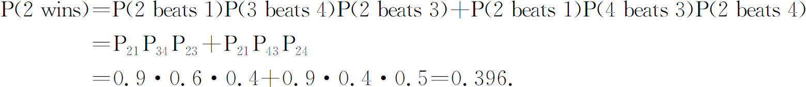
The next most likely team to win is team 3，with a 0.372 probability of winning the tournament．
【问题分析】
题目大意就是：2n 支足球队按照竞赛图踢比赛，给你任意两支球队相互之间踢赢的概率，求最后哪支球队最可能夺冠。
设dp［j］［i］代表第j支球队通过第i场比赛的概率，则：dp［j］［i］=sum(dp［j］［i-1］*dp［j+k］［i-1］*p［j］［j+k］)，j+k是它这一场可能面对的对手，实际上就是它上一场比赛的第一支队伍加2^(i-1)一直加到2^i。
【参考程序】
#include<stdio.h>
#include<iostream>
#include<algorithm>
#include<string.h>
using namespace std;
double dp［8］［200］;//dp［i］［j］表示在第i场比赛中j胜出的概率
double p［200］［200］;
int main(){
int n;
while(scanf("%d"，&n)!=EOF){
if(n==-1)break;
memset(dp，0，sizeof(dp));
for(int i=0;i<(1<<n);i++)
for(int j=0;j<(1<<n);j++)
scanf("%lf"，&p［i］［j］);
for(int i=0;i<(1<<n);i++)dp［0］［i］=1;
for(int i=1;i<=n;i++){//2^n个人要进行n场比赛
for(int j=0;j<(1<<n);j++){
int t=j/(1<<(i-1));
t^=1;
dp［i］［j］=0;
for(int k=t*(1<<(i-1));k<t*(1<<(i-1))+(1<<(i-1));k++)
dp［i］［j］+=dp［i-1］［j］*dp［i-1］［k］*p［j］［k］;
}
}
int ans;
double temp=0;
for(int i=0;i<(1<<n);i++){
if(dp［n］［i］>temp){ ans=i;
temp=dp［n］［i］;
}
}
printf("%d＼n"，ans+1);
}
return 0;
}
我们先来玩一个游戏：如果有14张牌，其中有1张是A。现在我来坐庄，一块钱赌一把，如果你抽中了A，我赔你10块钱，如果没有抽中，那么你那一块钱就输给我了。你觉得对谁有利？
这样的一个赌局，对庄家是有利的。因为在抽之前，谁也不知道能抽到什么，但是大家可以判断抽到A的可能性要小得多，14张牌中才有1张，换句话说概率是1/14，而抽不中A的概率是13/14。概率就是这样一个对未发生的事情会不会发生的可能性的一种预测。如果你只玩一把，当然只有两种可能：抽中了赢10块钱，没抽中输一块钱。但是，如果你玩上几百几千甚至更多把呢？有的抽中，有的抽不中，几千几百把的总结果是什么样的呢？这就是概率上的一个概念——数学期望，它可以理解成某件事情大量发生之后的平均结果。
数学期望亦称为期望、期望值等。在概率论和统计学中，一个离散型随机变量的期望值是试验中每次可能结果的概率乘以其结果的总和。数学期望在生活中有着十分广泛的应用，经常作为理性决策的基础。我们做任何一项投资、做任何一个决定，都不能只考虑最理想的结果，还要考虑到理想结果出现的概率和其他结果及其出现的概率。否则，如果只考虑最理想的结果，大家都应该从大学里退学，因为从大学退学的最理想结果是成为世界首富，那个叫比尔.盖茨的家伙。
对于上面那个游戏，抽中的概率是1/14，结果是赢10块钱(+10)；抽不中的概率是13/14，结果是输1块钱(-1)。把概率与各自的结果乘起来，然后相加，得到的“数学期望值”是(-3/14)。这就是说，如果你玩了很多很多把，平均下来，你每把会输掉(3/14)块钱。如果抽中A赔13块钱，那么数学期望值是0，你玩了很多把之后会发现结果最接近不输不赢。如果抽中A赔14块钱，那么数学期望值是1/14，对你有利，大量玩的结果是你会赢钱。赌场的规则设计原则就是这样，无论看起来多么诱人，赌客下注收益的数学期望都是负值，也就是说，总是对赌场有利。因为有大量的人赌，所以赌场的收支结果会很接近这个值。
信息学奥赛中的期望值问题，大多数都是求离散型随机变量的数学期望。如果X是一个离散的随机变量，输出值为x1 ，x2 ，…，和输出值相应的概率为p1 ，p2 ，…(概率和为1)，那么期望值
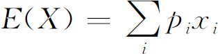
。例如投掷一枚骰子，X表示掷出的点数，P(X=1)，P(X=2)，…P(X=6)均为
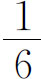
，那么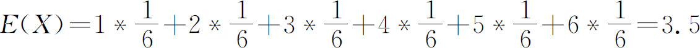
。对于数学期望，我们还要明确以下几点：
（1）期望的“线性”性质。对于任意随机变量X和Y以及常量a和b，有：E(aX+bY)=aE(X)+bE(Y)。当两个随机变量X和Y独立且各自都有一个已定义的期望时，有：E(XY)=E(X)E(Y)。
（2）全概率公式。假设{Bn ｜n=1，2，3，…}是一个概率空间的有限或者可数无限的分割，且每个集合Bn 是一个可测集合，则对任意事件A有全概率公式：
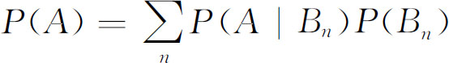
。其中：P(A|B)是B发生后A的条件概率。（3）全期望公式。pij =P(X=xi ，Y=yj )(i，j=1，2，…)，当X=xi 时，随机变量Y的条件期望以E(Y｜X=xi )表示。则全期望公式：
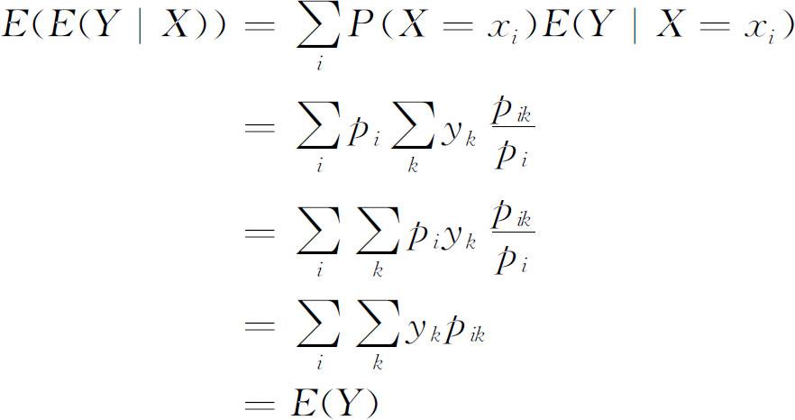
所以：
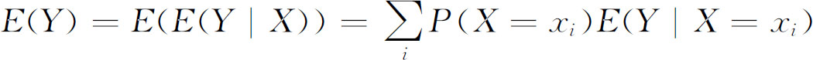
。例如，一项工作由甲一个人完成，平均需要4小时，而乙有0.4的概率来帮忙，两个人完成平均只需要3小时。若用X表示完成这项工作的人数，而Y表示完成的这项工作的期望时间（单位小时），由于这项工作要么由一个人完成，要么由两个人完成，那么这项工作完成的期望时间E(Y)=P(X=1)E(Y｜X=1)+P(X=2)E(Y｜X=2)=(1-0.4)*4-0.4*3=3.6。
对于期望问题，递推是一种快速有效的解决方法。我们不需要将所有可能的情况都枚举出来，而是根据已经求出的期望推出其他状态的期望，亦或根据一些特点和结果相同的情况，求出其概率。对于比较难找到递推关系的期望问题，而枚举又不现实的情况下，可以利用期望的定义即
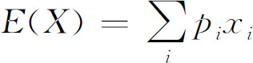
，根据实际情况以概率或方案数（除以总方案数依旧等于概率）作为状态，而下标直接或间接对应了这个概率下的变量值，将问题变成比较一般的统计方案或者利用全概率公式计算概率的递推问题。对于另外一些带有决策的期望问题，可以使用动态规划来解决，这类题由于要满足最优子结构，一般用期望来表示状态，而期望正或负表现了这个状态的优或劣。对于递推和动态规划都无法有效解决的图模型，由于迭代的效率低，且无法得到精确解，可以建立线性方程组并利用高斯消元的方法来解决。【例4.3-1】 百事世界杯之旅(2002年上海队选拔，pepsi.*，64MB，1秒)
【问题描述】
“…在2010年6月之前购买的百事任何饮料的瓶盖上都会有一个百事球星的名字。只要凑齐所有百事球星的名字，就可参加百事世界杯之旅的抽奖活动，获得球星背包，随声听，更可到现场观看世界杯。还不赶快行动!”
你关上电视，心想：假设有n个不同的球星名字，每个名字出现的概率相同，平均需要买几瓶饮料才能凑齐所有的名字呢？
【输入格式】
输入文件是一个整数n，2≤n≤33，表示不同球星名字的个数。
【输出格式】
输出凑齐所有的名字平均需要买的饮料瓶数。
“平均”的定义：如果在任意多次随机实验中，需要购买k1 ，k2 ，k3 ，…瓶饮料才能凑齐，而k1 ，k2 ，k3 ，…出现的概率分别是p1 ，p2 ，p3 ，…，那么，平均需要购买的饮料瓶数应为：k1 *p1 +k2 *p2 +k3 *p3 +…
如果是一个整数，则直接输出，否则应按照分数格式输出，例如五又二十分之三应该输出为：
3
5--
20
第一行是分数部分的分子，第二行首先是整数部分，然后是由减号组成的分数线，第三行是分母。减号的个数应等于分母的位数。分子和分母的首位都与第一个减号对齐。分数必须是不可约的。
【输入输出样例】
| pepsi.in | pepsi.out |
| 2 | 3 |
| 17 | 3340463 |
| 58------ | |
| 720720 |
【问题分析】
假设f(n，k)为一共有n个球星，现在还剩k个未收集到，还需购买饮料的平均次数。则有：
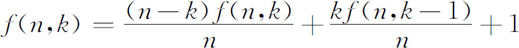
经移项整理，可得：
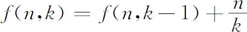
我们所要求的是f(n，n)，根据f(n，k)的递推式，可得：
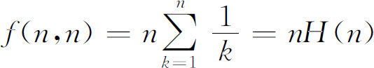
其中，H(n)表示Harmonic Number。
还有一种更加容易理解的解题思路：假设现在已经有k个球星的名字，那么要使球星的名字达到k+1个平均需要买多少瓶饮料？答案是n/(n-k)。所以，我们从没有球星的名字开始，直到把所有的球星名字都凑齐，平均需要的饮料数就可以计算出来：
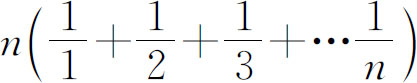
。【参考程序】
#include<iostream>
#include<stdio.h>
#include<stdlib.h>
#include<string.h>
#include<math.h>
#include<algorithm>
using namespace std;
int n;
long long p，q=1，r;
inline long long gcd(long long a，long long b){
if(b==0)
return a;
else
return gcd(b，a%b);
}
inline int s(long long x){
int p=0;
while(x>0){
x/=10;
p++;
}
return p;
}
int main(){
int i，j;
scanf("%d"，&n);
for(i=1;i<=n;i++){
p=p*i+q*n;
q*=i;
r=gcd(p，q);
p/=r;
q/=r;
}
r=p/q;
p%=q;
if(p==0)
cout<<r<<"＼n";
else{
for(i=s(r);i>0;i--)
printf(" ");
cout<<p<<"＼n";
if(r>0)
cout<<r;
for(i=s(q);i>0;i--)
printf("-");
printf("＼n");
for(i=s(r);i>0;i--)
printf(" ");
cout<<q<<"＼n";
}
return 0;
}
【例4.3-2】 多米诺骨牌(UVA10529)
【问题描述】
你试图把一些多米诺骨牌排成直线，然后推倒它们。但是如果你在放骨牌的时候不小心把刚放的骨牌碰倒了，它就会把相临的一串骨牌全都碰倒，而你的工作也被部分的破坏了。
比如你已经把骨牌摆成了DD__DxDDD_D的形状，而想要在x这个位置再放一块骨牌。它可能会把左边的一块骨牌或右边的三块骨牌碰倒，而你将不得不重新摆放这些骨牌。
这种失误是无法避免的，但是你可以应用一种特殊的放骨牌方法来使骨牌更多的向一个方向倒下。
给出你要摆放的骨牌数目，以及放骨牌时它向左和向右倒的概率，计算你为完成任务摆放的骨牌数目的平均数。假设你使用了最佳的摆放策略。
【输入格式】
输入文件将包含至多100个测试点，每个测试点占一行，包含需要摆放的骨牌数目n (1≤n≤1000)，以及两个非负实数Pl，Pr，表示骨牌向左和向右倒的概率。最后一个测试点包含一个数0。
【输出格式】
对于每个测试点输出一行表示题目要求的数目，保留两位小数。
【输入样例】
10 0.3 0.3
20 0.35 0.27
0
【输出样例】
82.07
296.67
【问题分析】
动态规划是一种应用范围很广的方法，由于概率和期望具有一些性质，如线性性，使我们可以在概率和期望之间建立一定的递推关系，这样就可以通过动态规划来解决一些概率和期望的最值问题。与其他方面的动态规划一样，合理的选择状态以及高效的状态转移方程是应用这种方法的关键，而状态的选择在这类问题中尤为重要。选择合适的状态不仅可以提高效率，而且可以保证动态规划所必须的无后效性。而动态规划的各种优化方法也可以应用。
首先，本题应该明确怎样找到最佳的摆放策略。我们可以考虑在位置i放最后一块骨牌。显然，i前面的i-1块骨牌和i后面的n-i块骨牌是互不影响的。所以我们假设摆放i-1块骨牌需要的次数平均是(或说期望是)E1 ，摆放n-i块骨牌需要的次数平均是E2 。那么我们摆放了这两段之后，就要把最后一块放上。这时如果把左边的碰倒了，就只好重新摆放。右边的也是同样的道理。所以需要摆放的平均值(E)是：
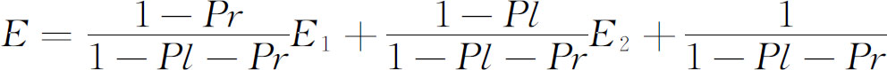
得到这个式子后就可以通过动态规划来得到最优的摆放方案。设Ei 是摆放i块骨牌所需要的最少期望次数，那么状态转移方程是：
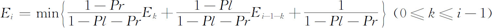
这样就得到了一个Θ(n2 )的算法。根据题目中的数据规模，最大的运算量是100*10002 =108 ，虽然可以忍受，但是还是比较慢的，如果数据稍大一点就容易超时。这就需要我们对动态规划进行优化。
这是一个1D/1D的动态规划，我们自然希望得到Θ(n)的算法，而这种优化一般都是通过动态规划的方程性质得到的。观察动态规划的方程可以发现，当k从0变化到i-1时第一项是不断增大的，第二项是不断减小的，第三项则是一个常数。因此整个函数一定是单峰的，这样就可以通过二分的方法进行优化，复杂度已经降到了Θ(nlog2 n)。而事实上，E这个数列不但是单增的，而且是凹的（如果PlPr=0就不凹也不凸，但是这不影响这里的讨论），通过这个性质我们还可以证明决策使用的k一定是不减的。这样通过记录上一次决策使用的k，就得到了一个均摊复杂度为Θ(n)的算法。
【参考程序】
#include<iostream>
#include<stdio.h>
#include<stdlib.h>
#include<string.h>
#include<math.h>
#include<algorithm>
using namespace std;
int n;
double pl，pr，f［1001］;
inline double dp(int i，int j){
return f［j］+f［i-j-1］+(1+pl*f［j］+pr*f［i-j-1］)/(1-pl-pr);
}
int main(){
int i，j;
while(1){
scanf("%d"，&n);
if(n==0)
break;
scanf("%lf%lf"，&pl，&pr);
for(i=1，j=0;i<=n;i++){
while(j<i-1 && dp(i，j)>dp(i，j+1))
j++;
f［i］=dp(i，j);
}
printf("%.2lf＼n"，f［n］);
}
return 0;
}
【例4.3-3】 有向图的遍历行动（travel.*，256M,1秒）
【问题描述】
给出一个点带权的有向图G=(V，E)，顶点i的权值为Wi 。对于每条边(u，v)∈E有一个属性Pu，v ，且Pu，v 为正数，其中Pu，v 表示从顶点u经过边(u，v)到顶点v的概率。若某点i发出边概率和为Si ，即
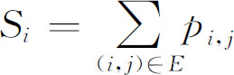
，那么在顶点i时有1-Si 的概率停止行动。定义路径path=<v1 ，v2 ，…>的权为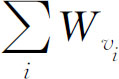
，即这条路径上所有点权之和。问从一个顶点s开始，在每次按照指定的概率走的前提下，在某一顶点停止行动时所走的路径权的期望值。如图4.3-1（左图）所示，s=1，W1 =W2 =W3 =1，W4 =0。可以看到从起点到停止行动有两条路径，这两条路径权分别为3和2，而走这两条路径的概率均为0.5。所以能得到期望值为3*0.5+2*0.5=2.5。
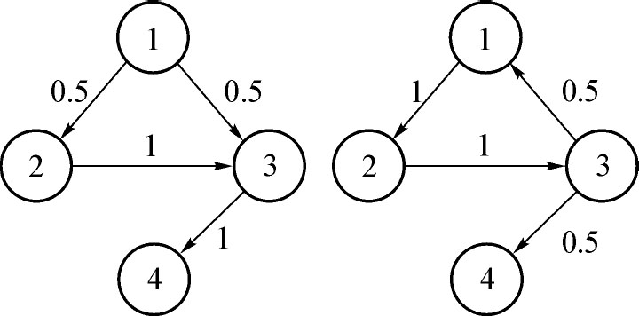
图4.3-1 有向图的遍历行动举例
若调整一条边的方向并修改相关概率，如图4.3-1（右图）所示，由于图中出现了环，这样路径就会有无数条。所以我们必须找到一种有效的方法处理一般的情况。
【输入格式】
第一行两个正整数n和m，表示共有n个点，m条边。
第二行n个正整数，表示n个点的点权。
接下来m行，每行三个数i，j，k表示一条边由i指向j，概率为k。数据保证合法且无重边和自环。1≤n≤200，0≤m≤n*(n-1)。
【输出格式】
输出n行，每行一个数，第i行的数表示从点出发的路径权的期望值。
你的答案与标准答案的绝对误差或相对误差不超过0.00001时视为正确。数据保证从每个点出发最终都会停止。
【输入样例】
4 4
1 1 1 0
1 2 1
2 3 1
3 1 0.5
3 4 0.5
【输出样例】
6
5
4
0
【问题分析】
设Fi，j 为从顶点i出发，经过j步的权和的期望，那么可以得到：
Fi，0 =Wi ，当j>0时，可以分成停止行动和走到某一个相邻点这两类情况。若存在一条边(i，k)，走这条边的概率Pi，k ，那么从顶点i出发经过顶点k的期望值即为顶点k出发j-1步的期望Fk，j-1 加上顶点i的权值Wi 。当然，在点i时还有
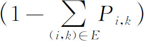
的概率停止行动，而停止行动依然要计算顶点i的权值Wi ，所以有：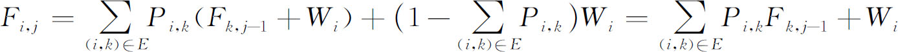
若Fi，j 当j→∞时收敛，设收敛于Fi ，那么答案即为Fs ，可以通过迭代法求出满足精度要求的解。但是显然当精度要求较高或增长速度较慢，程序运行时间就将会很长，并且当极限不存在时也难以判断。
所以可以抛弃步数的思想，设Fi 为从顶点i出发的权和期望，对于每个Fi 类似地建立这样一个等式
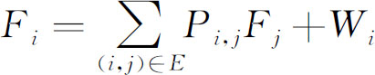
，那么Fs 则为所需要的答案。当图不存在环的情况下，那么我们就可以利用拓扑序进行递推以求得一个更好的复杂度。但是对于一般情况，显然按照这个式子递推就不完全可行了。这时利用所有的等式建立线性方程组求解则是成为了一个有效的方法。一般情况下，接下来即为利用高斯消元求解这个线性方程组。这样既得到了一个稳定的复杂度，根据方程组是否有唯一解的情况也能判断极限是否存在。同一般线性方程组一样，这个方程依然面对着无解或无数组解的问题。而方程组没有唯一解并不代表所有未知数没有唯一解，例如下面这个方程组：
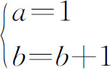
由于a与b无关所以b无解不影响a有唯一解。
由于每个顶点对应了方程组中的一个变量，那么方程组中只需要保留与顶点s有关，即s到达的顶点即可。实际操作中也可以对高斯消元的过程作一些相关调整。
而若需要求的未知数仍没有唯一解，一般情况下可以认为期望不存在。但是遇到具体问题时，需要根据题目的条件具体分析。
这可以作为绝大多数以期望作为状态的期望问题的模型，而对于无环的情况递推可以得到一个不错的时间复杂度，而对于一般情况高斯消元则成为通常解决这类期望问题的一把利器。
另外，需要注意以下2点：
（1）若权在边上而不在点上的话，即边(u，v)的权值为Wu，v ，那么同理方程即为
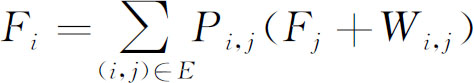
。（2）可以调整消元顺序让所要求的Es 放在最后，这样就可以不用回代，让实现更简洁，并在一些问题上能节省常数时间。
【参考程序】
#include<iostream>
#include<stdio.h>
#include<stdlib.h>
#include<string.h>
#include<math.h>
#include<algorithm>
using namespace std;
int n，m;
double f［201］;
struct equation{
double a［201］，p;
equation operator*(double b){
equation x;
int i;
for(i=1;i<=n;i++)
x.a［i］=a［i］*b;
x.p=p*b;
return x;
}
void operator-=(equation b){
int i;
for(i=1;i<=n;i++)
a［i］-=b.a［i］;
p-=b.p;
}
}x［201］={};
int main(){
int i，j，k;
scanf("%d%d"，&n，&m);
for(i=1;i<=n;i++){
scanf("%lf"，&x［i］.p);
x［i］.a［i］=1;
}
for(i=1;i<=m;i++){
scanf("%d%d"，&j，&k);
scanf("%lf"，&x［j］.a［k］);
x［j］.a［k］=-x［j］.a［k］;
}
for(i=j=1;i<n;j=++i){
if(x［i］.a［i］==0)
{
for(j=i+1;j<=n && fabs(x［j］.a［i］)<1e-10;j++);
if(j<=n)
swap(x［i］，x［j］);
}
for(j++;j<=n;j++)
if(fabs(x［j］.a［i］)>1e-10)
x［j］-=x［i］*(x［j］.a［i］/x［i］.a［i］);
}
for(i=n;i>=1;i--){
for(j=i+1;j<=n;j++)
if(fabs(x［i］.a［j］)>1e-10)
x［i］.p-=x［i］.a［j］*f［j］;
f［i］=x［i］.p/x［i］.a［i］;
}
for(i=1;i<=n;i++)
printf("%.6lf＼n"，f［i］);
return 0;
}
随机算法是这样的一类算法：它在接受输入的同时，在算法中引入随机因素，即通过随机数选择算法的下一步。也就是说，一个随机算法在不同的运行中对于相同的输入可能有不同的结果，或执行时间有可能不同。
随机算法的特点是简单、快速、灵活和易于并行化。随机算法可以理解为在时间、空间和精度上的一种的平衡。
常见的随机算法有四种：数值概率算法，蒙特卡罗(Monte Carlo)算法，拉斯维加斯(Las Vegas)算法和舍伍德(Sherwood)算法。
数值概率算法常用于数值问题的求解。这类算法所得到的往往是近似解。而且近似解的精度随计算时间的增加不断提高。在许多情况下，要计算出问题的精确解是不可能或没有必要的，因此用数值概率算法可得到满意的解。例如在计算π的近似值时，我们可以在单位圆的外接正方形内随机撒n个点，设有k个点落在单位圆内，可以得到
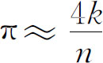
。通常所说的蒙特卡罗算法分为两类。一是蒙特卡罗判定：蒙特卡罗算法总是能给出问题的解，但是偶尔也可能会产生非正确的解。求得正确解的概率依赖于算法所用的时间。蒙特卡罗判定的错误必须是“单边”的，即实际答案是YES(NO)，算法给出的答案可能是NO(YES)，但是实际答案是NO(YES)，则算法给出的答案一定是NO(YES)。因此蒙特卡罗算法得到正确解的概率随着计算次数的增加而提高，即在时间和精度上的一种平衡。最常见的蒙特卡罗判定是Miller-Rabin素数测试和字符串匹配的Rabin-Karp算法。二是蒙特卡罗抽样：基本思想是对于所求的问题，通过试验的方法，通过大样本来模拟，得到这个随机变量的期望值，并用它作为问题的解。它是以一个概率模型为基础，按照这个模型所描绘的过程，通过模拟实验的结果，作为问题的近似解的过程。“模拟退火算法”就使用了蒙特卡罗抽样的思想。
拉斯维加斯算法不会得到不正确的解，也就是说，一旦用拉斯维加斯算法找到一个解，那么这个解肯定是正确的。但是有时候用拉斯维加斯算法可能找不到解。算法所用的时间越多，得到解的概率就越高。
舍伍德算法总能求得问题的一个解，且所求得的解总是正确的。当一个确定性算法在最坏情况下的计算复杂性与其在平均情况下的计算复杂性有较大差别时，可以在这个确定算法中引入随机性将它改造成一个舍伍德算法，消除或减少问题的好坏实例之间的这种差别。舍伍德算法精髓不是避免算法的最坏情况的发生，而是设法消除这种最坏行为与特定实例之间的关联性。舍伍德算法最典型的应用就是快速排序的随机化实现，“随机增量算法”也是舍伍德算法的一种应用。
【例4.4-1】 Jersey Politics(POJ2454)
【问题描述】
给定一长度为3K(1≤K≤60)的整数序列S，将其划分为等长（各为K）的三个子序列S1 、S2 和S3 ，要求其中至少两个子序列各自的加和大于500*K。求满足上述条件的一个划分（所给输入必有解）。
【输入格式】
第1行为K的值；
第2行至第3K+1行为序列S的元素值。
【输出格式】
满足条件的序号划分。
【输入样例】
2
510
500
500
670
400
310
【输出样例】
1
2
3
6
5
4
【问题分析】
首先，只要S1 、S2 和S3 中的两个其加和大于500*K即可，因此我们采用贪心策略，对输入序列S进行降序排序，将排序后的前2K个元素划分给S1 和S2 (假设最终满足条件的就是S1 和S2 )，不再考虑S3 。
设S′=(S1 ，S2 )，现考虑采用随机化算法。第一种策略：循环地随机重排S′中的所有元素，进行条件检测，若满足则退出循环输出结果；否则继续循环。这种策略会造成大量浪费，因为会出现如下情况：随机重排一次后，S1 和S2 各自包含的元素没有发生变化，导致此次重排没有意义。此外对整个S′进行重排也很耗时。第二种策略：每次分别在S1 和S2 中各随机选取一个元素进行互换，进行条件检测。这种策略能保证绝大部分的重排是有效的(除非本次随机选取的两个元素恰好是上次随机选取的那两个元素)。以下参考程序采用第二种策略。
【参考程序】
#include<stdio.h>
#include<time.h>
#include<stdlib.h>
#include<limits.h>
int a［200］［2］;
int k;
void sort(){
int n=3*k;
for(int i=0; i < n-1; i++){
int max=i;
for(int j=i+1; j < n; j++){
if(a［j］［0］ > a［max］［0］)
max=j;
}
if(max !=i){
int tmp1=a［max］［0］;
int tmp2=a［max］［1］;
a［max］［0］=a［i］［0］;
a［max］［1］=a［i］［1］;
a［i］［0］=tmp1;
a［i］［1］=tmp2;
}
}
}
int main(){
scanf("%d"，&k);
int floor=500*k;
for(int i=0; i < 3*k; i++){
scanf("%d"，&a［i］［0］);
a［i］［1］=i;
} sort();
int sum1=0;
int sum2=0;
for(int i=0; i < k; i++){
sum1+=a［i］［0］;
sum2+=a［i+k］［0］;
}
srand((unsigned int)time(0));
while(!(sum1 > floor && sum2 > floor)){
int offset1=rand()%k;
int offset2=rand()%k;
sum1=sum1-a［offset1］［0］+a［k+offset2］［0］;
//注意先更新加和再互换元素
sum2=sum2-a［k+offset2］［0］+a［offset1］［0］;
int tmp1=a［offset1］［0］;
int tmp2=a［offset1］［1］;
a［offset1］［0］=a［k+offset2］［0］;
a［offset1］［1］=a［k+offset2］［1］;
a［k+offset2］［0］=tmp1;
a［k+offset2］［1］=tmp2;
}
for(int i=0; i < 3*k; i++){
printf("%d＼n"，a［i］［1］+1);
}
return 0;
}
【例4.4-2】 Matrix Multiplication(POJ3318)
【问题描述】
给定n*n的矩阵A，B，C，问A*B=C是否成立？由于数据组数比较多，请设计一种时间复杂度低于Θ(n3 )的算法。
【输入格式】
第一行一个整数n(n≤500)。
以下依次输入3个n*n的矩阵A，B，C。
矩阵A，B的元素值不超过100，矩阵C的元素值不超过107 。
【输出格式】
一行一个字符串，“YES”或者“NO”。
【输入样例】
2
1 0
2 3
5 1
0 8
5 1
10 26
【输出样例】
YES
【问题描述】
首先，我们会想到把A和B两个矩阵乘起来，看结果是不是C。但是，直接乘的时间复杂度为Θ(n3 )，不符合题述要求。
设v为一个随机生成的n维列向量，其每个元素均独立且等概率地选自0或1。考察A*(B*v)和C*v是否相等。如果A*B=C成立，则它们必然相等。如果A*B=C不成立，那它们相等的概率有多高呢？既然A*B≠C，也就是A*B-C≠0，我们知道矩阵A*B-C一定有一个元素非零，设它在第i行第j列。那么第i行与列向量相乘时，vj 取0或取1一定至少有其一使得(A*B-C)*vj 的第i行的元素非零，也就使得最终结果非零。因此，当A*B=C不成立时，我们至少有1/2的概率验出“不成立”。如果多试几次，或加大v中元素的取值范围，将迅速提高正确率。事实上，如果试60次，即可将错误率降低到2-60 ≈10-20 。
【参考程序】
#include<iostream>
#include<stdio.h>
#include<stdlib.h>
#include<string.h>
#include<math.h>
#include<algorithm>
#include<time.h>
using namespace std;
int n，a［501］［501］，b［501］［501］，c［501］［501］，d［501］，f［501］，g［501］;
int main(){
int i，j，k;
while(scanf("%d"，&n)!=EOF){
for(i=1;i<=n;i++)
for(j=1;j<=n;j++)
scanf("%d"，&a［i］［j］);
for(i=1;i<=n;i++)
for(j=1;j<=n;j++)
scanf("%d"，&b［i］［j］);
for(i=1;i<=n;i++) for(j=1;j<=n;j++)
scanf("%d"，&c［i］［j］);
for(k=1;k<=60;k++){
for(i=1;i<=n;i++)
d［i］=(rand()*rand()+rand())%2;
for(i=1;i<=n;i++){
g［i］=0;
for(j=1;j<=n;j++)
g［i］+=c［i］［j］*d［j］;
}
for(i=1;i<=n;i++){
f［i］=0;
for(j=1;j<=n;j++)
f［i］+=b［i］［j］*d［j］;
}
for(i=1;i<=n;i++)
d［i］=f［i］;
for(i=1;i<=n;i++){
f［i］=0;
for(j=1;j<=n;j++)
f［i］+=a［i］［j］*d［j］;
}
for(i=1;i<=n;i++)
if(f［i］!=g［i］)
break;
if(i<=n)
break;
}
if(k<=60)
printf("NO＼n");
else
printf("YES＼n");
}
return 0;
}
【例4.4-3】 Hit(BZOJ3680)
【问题描述】
gty又虐了一场比赛，被虐的蒟蒻们决定吊打gty。gty见大势不好机智的分出了n个分身，但还是被人多势众的蒟蒻抓住了。蒟蒻们将n个gty吊在n根绳子上，每根绳子穿过天台的一个洞。这n根绳子有一个公共的绳结x。吊好gty后蒟蒻们发现由于每个gty重力不同，绳结x在移动。蒟蒻wangxz脑洞大开的决定计算出x最后停留处的坐标，由于他太弱了决定向你求助。
不计摩擦，不计能量损失，由于gty足够矮所以不会掉到地上。
【输入格式】
输入第一行为一个正整数n(1≤n≤10000)，表示gty的数目。
接下来n行，每行三个整数xi ，yi ，wi ，表示第i个gty的横坐标，纵坐标和重力。
对于100%的数据，1≤n≤10000，-100000≤xi ，yi ≤100000。
【输出格式】
输出一行两个浮点数（保留到小数点后3位，中间用1个空格隔开），表示最终x的横、纵坐标。
【输入样例】
3
0 0 1
0 2 1
1 1 1
【输出样例】
0.577 1.000
【问题分析】
模拟退火（Simulated Annealing，简称SA）是一种通用概率算法，用来在一个大的搜寻空间内找寻命题的最优解。其基本思想如下：
（1）初始化：初始温度T（充分大），初始解状态S（是算法迭代的起点），每个T值的迭代次数L；
（2）对k=1，…L做第（3）至第（6）步：
（3）产生新解S′；
（4）计算增量Δt′=C（S′）-C（S），其中C（S）为评价函数；
（5）若Δt′<0，则接受S′作为新的当前解，否则以概率exp（-Δt′/（KT））接受S′作为新的当前解（k为波尔兹曼常数）；
（6）如果满足终止条件，则输出当前解作为最优解，结束程序。
终止条件通常取为连续若干个新解都没有被接受时终止算法。
（7）T逐渐减少，且T->0，然后转第（2）步。
爬山算法是一种局部择优的方法，采用启发式方法，是对深度优先搜索的一种改进，它利用反馈信息帮助生成解的决策，属于人工智能算法的一种。其算法思想如下：
从当前的节点开始，和周围的邻居节点的值进行比较。如果当前节点是最大的，那么返回当前节点，作为最大值(既山峰最高点)；反之就用最高的邻居节点来，替换当前节点，从而实现向山峰的高处攀爬的目的。如此循环直到达到最高点。
在本题中，我们先估测出一个绳结初始位置，然后让每个质点对绳结产生一个大小正比与重量的拉力来拉动绳结。随着时间推移，这个比例不断减小，即拉力不断减小。当这个比例足够小时，停止并输出答案。
【参考程序】
#include<iostream>
#include<cstdio>
#include<cmath>
using namespace std;
int n;
double ansx，ansy;
struct data{double x，y;int w;}p［10005］;
inline double sqr(double x){return x*x;}
inline double dis(double x，double y，data p){
return sqrt(sqr(x-p.x)+sqr(y-p.y));
}
void hillclimb(){
double t=1000，x，y;
for(int i=1;i<=n;i++)
ansx+=p［i］.x*p［i］.w，ansy+=p［i］.y*p［i］.w;
ansx/=n;ansy/=n;
while(t>0.00000001){
x=y=0;
for(int i=1;i<=n;i++){
x+=(p［i］.x-ansx)*p［i］.w/dis(ansx，ansy，p［i］);
y+=(p［i］.y-ansy)*p［i］.w/dis(ansx，ansy，p［i］);
}
ansx+=x*t;ansy+=y*t;
if(t>0.5)t*=0.5;
else t*=0.97;
}
printf("%.3lf %.3lf"，ansx，ansy);
}
int main(){
freopen("hit.in"，"r"，stdin);
freopen("hit.out"，"w"，stdout);
scanf("%d"，&n);
for(int i=1;i<=n;i++)
scanf("%lf%lf%d"，&p［i］.x，&p［i］.y，&p［i］.w);
hillclimb();
return 0;
}
函数在某点“收敛”，是指当自变量趋向这一点时，其函数值的极限就等于函数在该点的值，即对任意的a>0，存在b>0，使得对任意的满足x0 -b<x<x0 +b的自变量x，都有｜f(x)-f(x0 )｜<a，则称f(x)在x0 处收敛到f(x0 )。
我们知道，动态规划算法要求问题无后效性。如果问题有不可避免的后效性(这里指决策出现环状结构时)，一般可以采用“迭代”的方法来进行计算。就是给每个决策点设定“较劣”初值，然后通过转移方程对每个决策点不断进行转移、更新。当然，迭代也不是万能的，它要求问题有“收敛性”而且收敛的速度要足够快，或者要求的结果精度不是特别高。对于同一规模的不同输入，其函数的收敛速度可能相差很大，迭代法的效率也可能存在很大的差别。所以，这种方法的效率有可能因为针对性强的数据而变劣。
一般来说，信息学竞赛中的函数大部分是收敛的，所以，迭代法的应用还是非常广泛的。当然，遇到函数收敛性的问题，也可以通过数学推导来解决。
【例4.5-1】 Chocolate(ZJU1363)
【问题描述】
2100年，ACM牌巧克力将风靡全球。“绿的，橘红的，棕色的，红的……”，彩色的糖衣可能是ACM牌巧克力最吸引人的地方，你一共见过多少种颜色？现在，据说ACM公司从一个24种颜色的调色板中选择颜色来装饰他们的美味巧克力。
有一天，Sandy用一大包有五种颜色的巧克力玩了一个游戏。每次他从包里拿出一粒巧克力并把它放在桌上。如果桌上有两粒相同颜色的巧克力，他就把他们吃掉。他惊奇的发现大多数时候桌上都有2到3粒巧克力。
如果ACM牌巧克力有c(1≤c≤100)种颜色，在拿出了n(1≤n≤1000000)粒巧克力之后在桌上恰有m(1≤m≤1000000)粒的概率是多少？
【输入格式】
多组测试数据，以一行一个0表示结束。
每行为一组测试数据，包括3个非负整数：c，n，m。
【输出格式】
对于每组数据输出一行一个实数，四舍五入保留3位小数。
【输入样例】
5 100 2
0
【输出样例】
0.625
【问题分析】
如果n不是那么大的话，很容易用动态规划来解决，状态转移方程就是：Pi+1，k =Pi，k-1 *(c-k+1)/c+Pi，k+1 *(k+1)/c。其中Pi，k 表示拿出了i粒巧克力后桌上剩余m粒的概率（当然还要考虑一些边界情况）。但是本题的规模为n＝1000000，如果直接动态规划肯定是要超时的。
算法1、把“桌上有m粒巧克力”转化成“有m种巧克力取了奇数粒，其余的都取偶数粒的取法”，推导出生成函数
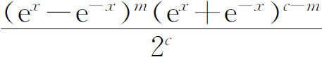
，所以总的取法数就是xn 的系数乘以n!和C(c，m)。而概率就是总的取法数除以cn ，然后通过“泰勒展开式”来进一步化简求解。这种方法最优，时间复杂度是O(c2 )。算法2、由于本题的精度要求很低，迭代的方法也是可以达到目的的，而且复杂度也接近O(c2 )。首先，本题不会出现极大或极小的概率，一般来说这种情况下的收敛是比较快的。我们可以不断的计算P的值，当它的变化不足以影响结果时就停止计算。当然，本题的收敛是分奇偶的(显然，桌上剩余的巧克力数和拿出的巧克力数是同奇偶的)，所以不能比较Pi 和Pi-1 ，而要比较Pi 和Pi-2 ，只要看到Pi 和Pi-2 差距小于一个定值(比如1e-5)，而且i和N同奇偶，就可以停止动态规划，因为此时继续规划下去所产生的不同已经不可能影响到要输出的结果。经过测试发现，最大的数据也只要经过几百次迭代就稳定了，这样就将效率大大提高，满足了题目的要求，参考程序给出了具体做法。
算法3、对方程直接使用矩阵快速冥优化，参考程序也给出了具体做法。形式上，算法1的结果就是算法3的进一步推导，把矩阵乘法转化为矩阵的特征根求解就得到算法1的结果，但是并不是所有题目都是这样，本质上还是两种方法。算法1对数学功底要求较高，难在推导，适用范围更广。
【参考程序】
//算法2
#include<bits/stdc++.h>
#define inf 1e6
using namespace std;
double f［1001］［101］;
int main(){
int c，n，m;
scanf("%d%d%d"，&c，&n，&m);
while (c){
//初始化
for (int i=0;i<=c;++i){
f［0］［i］=0;
}
f［0］［0］=1;
if (c<m)
{printf("0.000＼n");scanf("%d%d%d"，&c，&n，&m);continue;}
int i;
for (i=1;i<=n;++i){//转移
int j;
for (j=1;j<c;++j)
f［i］［j］=f［i-1］［j-1］*(double)(c-j+1)/ (double)c+f［i-1］［j+1］*(double)(j+1)/(double)c;
j=0;
f［i］［0］=f［i-1］［j+1］*(double)(j+1)/(double)c;
j=c;
f［i］［c］=f［i-1］［j-1］*(double)(c-j+1)/(double)c;
double det=0.0;//计算收敛程度
if (i==1）continue;
for (j=0;j<=c;++j)
det=max(det，fabs(f［i］［j］-f［i-2］［j］));
if (det<1.0/inf）break;//如果已经足够收敛就退出
}
int l=1;
if ((i<=n)&&((n-i)%2==0)）l+=1;//判断是中断退出还是自然结束
printf("%.3lf＼n"，f［i-l］［m］);
scanf("%d%d%d"，&c，&n，&m);
}
return 0;
}
//算法3
#include<bits/stdc++.h>
//新建矩阵数据类型
#define matrix vector< vector<double>>
using namespace std;
class Matrix//新建矩阵类
{
private:
int n，m;
matrix a;
public:
Matrix(matrix aa，int nn，int mm){
a=aa;
n=nn;
m=mm;
}
Matrix operator * (Matrix b）const;//矩阵乘法
matrix getmatrix ();
int getn();
int getm(); Matrix qsm(int k);//矩阵快速冥
Matrix I();//构造单位矩阵
};
matrix Matrix::getmatrix (){return a;}
int Matrix::getn(）{return n;}
int Matrix::getm(）{return m;}
Matrix Matrix::I(){
matrix c(n，vector<double>(m，0.0));
for (int i=0;i<n;++i）c［i］［i］=1;
return Matrix(c，n，m);
}
Matrix Matrix::qsm(int k){
if (k==0）return I();
if (k==1）return (Matrix(a，n，m));
Matrix mat=qsm(k/2);
mat=mat*mat;
if ((k&1)==1）mat=Matrix(a，n，m)*mat;
return mat;
}
Matrix Matrix::operator * (Matrix bb）const{
vector<double> v(bb.getm()，0.0);
matrix mat(n，v);
matrix b=bb.getmatrix();
for (int i=0;i<n;++i)
for (int j=0;j<bb.getm();++j)
for (int k=0;k<m;++k)
mat［i］［j］+=a［i］［k］*b［k］［j］;
Matrix c=Matrix(mat，n，bb.getm());
return c;
}
int main(){
int c，n，m;
scanf("%d%d%d"，&c，&n，&m);
while (c){ if (c<m)
{printf("0.000＼n");scanf("%d%d%d"，&c，&n，&m);continue;}
vector<double> v(1，0.0);
matrix ff(c+1，v);
ff［0］［0］=1;
Matrix f(ff，c+1，1);//初始矩阵
matrix mat(c+1，vector<double> (c+1，0.0));
for (int i=0;i<=c;++i)//构造初始转移矩阵
{
if (i!=0){
mat［i］［i-1］=(double)(c-i+1)/(double)c;
}
if (i!=c){
mat［i］［i+1］=(double)(i+1)/(double)c;
}
}
Matrix Mat(mat，c+1，c+1);
Matrix ans=Mat.qsm(n);
ans=ans*f;
matrix an=ans.getmatrix();
printf("%.3lf＼n"，an［m］［0］);
scanf("%d%d%d"，&c，&n，&m);
}
return 0;
}
【例4.5-2】 非诚勿扰(2015年江苏省队选拔，cross.*，512MB，1秒)
【问题描述】
JYY赶上了互联网创业的大潮，为非常勿扰开发了最新的手机App实现单身大龄青年之间的“速配”。然而随着用户数量的增长，JYY发现现有速配的算法似乎很难满足大家的要求，因此JYY决定请你来调查一下其中的原因。
应用的后台一共有N个女性和N个男性，他们每个人都希望能够找到自己的合适伴侣。为了方便，每个男性都被编上了1到N之间的一个号码，并且任意两个人的号码不一样。每个女性也被如此编号。
JYY应用的最大特点是赋予女性较高的选择权，让每个女性指定自己的“如意郎君列表”。每个女性的如意郎君列表都是所有男性的一个子集，并且可能为空。如果列表非空，她们会在其中选择一个男性作为自己最终接受的对象。
JYY用如下算法来为每个女性速配最终接受的男性：将“如意郎君列表”中的男性按照编号从小到大的顺序呈现给她。对于每次呈现，她将独立地以P的概率接受这个男性(换言之，会以1-P的概率拒绝这个男性)。如果她选择了拒绝，App就会呈现列表中下一个男性，以此类推。如果列表中所有的男性都已经呈现，那么中介所会重新按照列表的顺序来呈现这些男性，直到她接受了某个男性为止。显然，在这种规则下，每个女性只能选择接受一个男性，而一个男性可能被多个女性所接受。当然，也可能有部分男性不被任何一个女性接受。
这样，每个女性就有了自己接受的男性（“如意郎君列表”为空的除外）。现在考虑任意两个不同的、如意郎君列表非空的女性a和b，如果a的编号比b的编号小，而a选择的男性的编号比b选择的编号大，那么女性a和女性b就叫做一对不稳定因素。
由于每个女性选择的男性是有一定的随机性的，所以不稳定因素的数目也是有一定随机性的。JYY希望你能够求得不稳定因素的期望个数（即平均数目），从而进一步研究为什么速配算法不能满足大家的需求。
【输入格式】
输入第一行包含2个自然数N，M，表示有N个女性和N个男性，以及所有女性的“如意郎君列表”长度之和是M。
接下来一行一个实数P，为女性接受男性的概率。
接下来M行，每行包含两个整数a，b，表示男性b在女性a的“如意郎君列表”中。
输入保证每个女性的“如意郎君列表”中的男性出现切仅出现一次。
【输出格式】
输出一行包含一个实数，四舍五入后保留到小数点后2位，表示不稳定因素的期望数目。
【输入样例】
5 5
0.5
5 1
3 2
2 2
2 1
3 1
【输出样例】
0.89
【数据规模】
对于30%的数据满足：1≤n，m≤10，p=0.5
对于60%的数据满足:1≤n，m≤5000
对于100%的数据满足:1≤n，m≤500000，0.4≤p<0.6
【问题分析】
首先，可以利用等比数列求和公式，因为0.4<p<0.6，删去分子上的A(q+1)算出每对女男(i，j)在一起的概率。询问时倒序插入并用树状数组维护。
比如对于一个女生a，有k个候选男生编号为1..k，那么对于第m个男生，(a，m)在一起的概率就是:
(1-p)^(m-1)*p+(1-p)^k*(1-p)^(m-1)*p+(1-p)^2k*(1-p)^(m-1)*p+…+(1-p)^(x-1)*(1-p)^(m-1)*p
分别对应在第1轮、第2轮、第3轮…第x轮选中第m个男生的概率，其中k需要到正无穷。容易发现，这其实是一个以(1-p)^(m-1)*p为首项，(1-p)^*n为公比的等比数列，我们要做的就是对这个数列求和。不妨先利用等比数列求和公式：
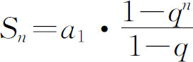
其中，a1 =(1-p)^(m-1)*p，q=(1-p)^k。瓶颈在于n趋向正无穷，无法精确求出。因为q=(1-p)^k，0.4<1-p<0.6，q不接近1，那么当n很大时，q^n非常接近0，因为只需要保留2位小数，不放把q^n当作0。那么，答案就是a1 /(1-q)。
这样我们就求出了每对男女在一起的概率。
至于统计答案，原始想法是枚举每组不稳定的配对关系，算出概率和累加即可，但是这样只能通过60%数据。我们可以倒序枚举女生，使用树状数组或线段树维护后i个女生与前j个男生配对的概率和。最多操作M次插入M次询问，可通过全部数据。
【参考程序】
#include<iostream>
#include<cstdio>
#include<cstdlib>
#include<cstring>
#include<cassert>
#include<vector>
#include<fstream>
#include<deque>
#include<string>
#include<ctime>
using namespace std;
int n，m;
struct TA{
double a［600022］;
double sum(int p){
double ret=0;
for (; p; p-=(p &-p)){
ret+=a［p］;
}
return ret;
}
void modify(int p，double val){
p++;
for (;p <=n; p+=(p &-p)){
a［p］+=val;
}
}
} ta;
struct Edge{
int u，v;
double p;
Edge(）{}
Edge(int u，int v，double p): u(u)，v(v)，p(p）{}
} e［600000］;
bool cmp(const Edge &a，const Edge &b){
if (a.u !=b.u)
return a.u < b.u;
else
return a.v < b.v;
}
double p;
double pow_1_p［600001］;
int deg［600000］，cnt［600000］;
int main(){
scanf("%d%d"，&n，&m);
scanf("%lf"，&p);
for (int i=0; i < n; i++){
int u，v;
scanf("%d%d"，&u，&v); u--; v--;
deg［u］+=1;
e［i］=Edge(u，v，0);
}
sort(e，e+m，cmp);
pow_1_p［0］=1.0;
for (int i=0; i < n; i++){
pow_1_p［i+1］=pow_1_p［i］ * (1-p);
}
memset(cnt，0，sizeof(cnt)); for (int i=0; i < m; i++){
int u=e［i］.u;
e［i］.p=p * (pow_1_p［cnt［u］］)/ (1-pow_1_p［deg［u］］);
cnt［u］+=1;
}
reverse(e，e+m);
int pointer=0;
double ret=0.0;
for (int i=n-1; i >=0; i--){
for (int j=pointer; j < m && e［j］.u == i; j++){
ret+=ta.sum(e［j］.v）* e［j］.p;
}
for (int j=pointer; j < m && e［j］.u == i; j++){
ta.modify(e［j］.v，e［j］.p);
pointer=j+1;
}
}
printf("%.2lf＼n"，ret);
return 0;
}
1．掷一个均匀硬币2N次，求出现正面K次的概率。
2．有5个白色珠子和4个黑色珠子，从中任取3个求至少有一个是黑色的概率。
3．小林的罚球命中率为60%，现在他罚球5次，计算命中4次及以上的概率。
4．在100件产品中，有95件合格品，5件次品，从中任取两件，计算：
（1）两件都是合格品的概率。
（2）两件都是次品的概率。
（3）一件是合格品、一件是次品的概率。
5．集合A中有100个数，B中有50个数，并且满足A中元素于B中元素关系a+b=10的有20对。问任意分别从A和B中各抽签一个，抽到满足a+b=10的a，b的概率。
6．从5双不同颜色的袜子中任取两只，正好是一双的概率为多少？
7．从0到9中挑出4个数编4位数的电话号码，求首位不是0且数字不重复的概率。
8．从3男生、3女生中挑出4个，计算男女人数相等的概率。
9．某种动物由出生而活到20岁的概率为0.7，活到25岁的概率为0.56，求现龄为20岁的这种动物活到25岁的概率。
10．假设一列火车有编号为1到n的n个位置。所有旅客都依次排队检票进站。突然闯来了一个大猩猩，他的手里也拿了一张票!可是他不认识字，也不按人类规则办事，径直挤了进去，随意找了个位置就坐下了。根据社会的和谐程度，其他的乘客有两种反应：
(1）大家都义愤填膺，和大猩猩计较起来。“既然他不遵守，为什么要我遵守？”，于是每个人都随意抢占一个位置坐下，并且坚决不让座给其他乘客。
(2）乘客们的素质都比较高，以“社会和谐”为重。如果自己的位置没有被占领，就赶紧坐下。如果自己的位置已经被别人(包括那只大猩猩)占用了，就随意地选择另一个位置坐下，并开始闭目养神，不再挪动位置。
那么，在这两种情况下，第i个乘客(除去那只大猩猩)坐到自己原位置上的概率分别是多少？
11．有一个不透明的桶，里面有n个白球、n个黑球。必须按照以下规则把球取出来：
（1）每次从桶里面拿出来两个球。
（2）如果是两个颜色相同的球，就再放进去一个黑球。
（3）如果是两个颜色不同的球，就再放进去一个白球。
问：（1）如果n=10000，则最后桶里面只剩下一个黑球的概率是多少？
（2）如果n=9999，则最后桶里面只剩下一个黑球的概率是多少？
12．大家都玩过Windows自带的挖雷游戏吧!假设目前的游戏设置了50个地雷，你已经点击了两个位置，出现如图4.6-1所示情况，请问：A、B、C三个方块有地雷的概率各是多少？
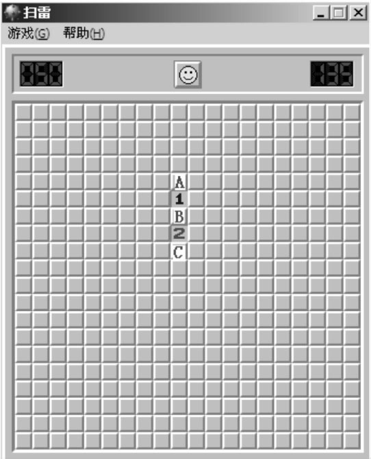
图4.6-1 挖雷游戏图
13．Coin Toss(POJ3440)
【问题描述】
在一个有名的园游会中有这样的一个游戏，将一个硬币投掷到一个被一些正方形方格分割的桌子上。游戏的奖励取决于你投掷的硬币覆盖的方格数，覆盖的方格越多，奖励越高。
图4.6-2所示为一种投掷了5枚硬币的情形，图中的1号硬币覆盖了1个方格；2号硬币覆盖了2个方格；3号硬币覆盖了3个方格；4号方格覆盖了4个方格；5号硬币覆盖了2个方格。注意：硬币是可以跨越桌子的边界（图中的硬币5）。定义硬币覆盖一个方格指的是硬币与方格相交的面积为正，只与某方格边界相切的情况不被认为覆盖了该方格。你可以假定你投掷的硬币一定能够平躺在桌面上，你可以使你的硬币的圆心等概率地落在桌子上（包括桌子的边界）。
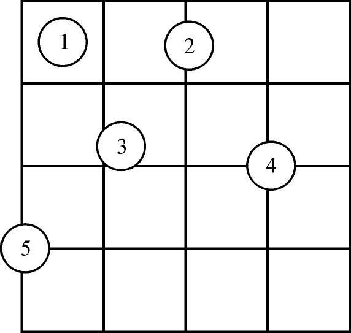
图4.6-2 硬币覆盖游戏
硬币覆盖特定数目方格的概率取决于方格的边长，硬币的大小，方格的数目。现在请你写一个程序来根据给定的数据计算硬币覆盖特定数目方格的概率。
【输入格式】
输入文件第一行包括一个整数，表示测试数据的组数。
对于每一组数据，包括4个整数，m，n，t，c，表示桌子上有m行n列方格，每个方格的边长是t，直径为c。1≤m，n≤5000，1≤c<t≤1000。
【输出格式】
对于每一组输出，首先输出测试数据的组数，接着分4行输出硬币覆盖1，2，3，4个方格的概率，保留4位小数，格式参见样例。
每两组数据之间输出一个空行，最后一组数据之后请不要输出多余的空行。
【输入样例】
3
5 5 10 3
7 4 25 20
10 10 10 4
【输出样例】
Case 1:
Probability of covering 1 tile =57.7600%
Probability of covering 2 tiles=36.4800%
Probability of covering 3 tiles=1.2361%
Probability of covering 4 tiles=4.5239%
Case 2:
Probability of covering 1 tile =12.5714%
Probability of covering 2 tiles=46.2857%
Probability of covering 3 tiles=8.8293%
Probability of covering 4 tiles=32.3135%
Case 3:
Probability of covering 1 tile =40.9600%
Probability of covering 2 tiles=46.0800%
Probability of covering 3 tiles=2.7812%
Probability of covering 4 tiles=10.1788%
14．计算概率(calculate.*，64MB，1秒)
【问题描述】
小明有n个长度不一的小木棍，这些木棍的长度都是正整数。小明的父亲想和小明做一个游戏。他规定一个整数长度l，让小明闭着眼睛从n个木棍中随便拿出两个。如果两个木棍的长度总和小于等于l，则小明胜，否则小明的父亲胜。小明想知道他胜出的概率究竟有多大。
【输入格式】
输入包含两行。第一行为两个整数n和l，其中n和l都不超过100000。第二行包含n个整数，分别为n个木棍的长度。
【输出格式】
输出包含一个实数，小明胜出的概率，保留两位小数。
【输入样例】
4 5
1 2 3 4
【输出样例】
0.67
15．聪聪与可可(NOI2005，cchkk.*，64MB，1秒)
【题目大意】
在一个魔法森林里，住着一只聪明的小猫聪聪和一只可爱的小老鼠可可。
整个森林可以认为是一个无向图，图中有N个美丽的景点，景点从1至N编号。在景点之间有一些路连接。
可可正在景点M(M≤N)处。以后的每个时间单位，可可都会选择去相邻的景点(可能有多个)中的一个或停留在原景点不动。而去这些地方所发生的概率是相等的。
聪聪是很聪明的，所以，当她在景点C时，她会选一个更靠近可可的景点，如果这样的景点有多个，她会选一个标号最小的景点。如果走完第一步以后仍然没吃到可可，她还可以在本段时间内再向可可走近一步。
在每个时间单位，假设聪聪先走，可可后走。在某一时刻，若聪聪和可可位于同一个景点，则可可就被吃掉了。
问平均情况下，聪聪几步就可能吃到可可。对于所有数据：1≤N，E≤1000。
16．RedIsGood(TopCoder SRM420 Div1)
【题目大意】
桌面上有R张红牌和B张黑牌，随机打乱顺序后放在桌面上，开始一张一张地翻牌，翻到红牌得到1美元，黑牌则付出1美元。可以随时停止翻牌，在最优策略下平均能得到多少钱。
17．Highlander(SGU385)
【题目大意】
随机给出1，2，…n个数字的一个错位排列i1 i2 …in (也就是等概率选择n个数字所有错位排列中的一个)，对应了一张有向图G=(V，E)，其中V={1，2，…n}，E={(1，i1 )，(2，i2 )，…(n，in )}。问在所有最长环上的顶点数的期望值。2≤n≤100。
18．First Knight(SWERC 2008 Problem B)
【题目大意】
一个矩形区域被分成m*n个单元编号为(1，1)至(m，n)，左上为(1，1)，右下为(m，n)。给出
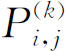
，其中1≤i≤m，1≤j≤n，1≤k≤4，表示了(i，j)到(i+1，j)，(i，j+1)，(i-1，j)，(i，j-1)的概率。一个骑士在(1，1)，按照给定概率走，每步都于之前无关，问到达(m，n)的期望步数。题目保证对于i≠m或j≠n，有
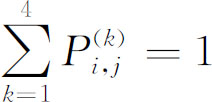
，且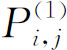
和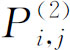
中至少一个不为0。且保证走出矩形的概率与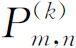
均为0，答案不超过1000000。1≤m，n≤40。19．球场上的犯规(foul.*，256MB，1秒)
【题目大意】
球场是一个长w宽h的矩形，其四个顶点分别为(w，0)，(w，h)，(0，h)，(0，0)，裁判点位于点(w0 ，0)。
场上有n(n≤1000)名球员，第i名球员坐标为(xi ，yi )，活动区域为半径为ri 的圆。球员的活动区域不可能到球场之外且不会有两名球员的活动区域有公共点。现在，球员佩佩会随机在出现在球场的任意位置并且犯规，求他不被裁判看到的概率。
20．后缀(suffix.*，256MB，1秒)
【题目大意】
给定字符串S，S仅有字符a和b组成，Len(S)≤40。有一空串T，每一轮在T串末尾随机加上a和b。询问期望几轮以后S串为T串的后缀。
21．神奇口袋(NOI2006，bag.*，256MB，1秒)
【问题描述】
Pòlya获得了一个奇妙的口袋，上面写着人类难以理解的符号。Pòlya看得入了迷，冥思苦想，发现了一个神奇的模型(被后人称为Pòlya模型)。为了生动地讲授这个神奇的模型，他带着学生们做了一个虚拟游戏：
游戏开始时，袋中装入a1 个颜色为1的球，a2 个颜色为2的球，…at 个颜色为t的球，其中ai 都是自然数。
游戏开始后，每次严格进行如下的操作：
从袋中随机的抽出一个小球(袋中所有小球被抽中的概率相等)，Pòly独自观察这个小球的颜色后将其放回，然后再把个与其颜色相同的小球放到口袋中。
设ci 表示第i次抽出的小球的颜色(1≤ci ≤t)，一个游戏过程将会产生一个颜色序列(c1 ，c2 ，…cn …)。
Pòlya把游戏开始时t种颜色的小球每一种的个数a1 ，a2 ，…at 告诉了所有学生。然后他问学生：一次游戏过程产生的颜色序列满足下列条件的概率有多大？
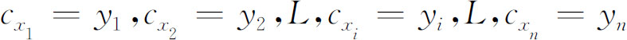
其中：0<x1 <x2 <…<xn ，1≤yi ≤t。换句话说，已知(t，n，d，a1 ，a2 ，…at ，x1 ，y1 ，x2 ，y2 ，…xn ，yn )，你要回答有多大的可能性会发生下面的事件：“对所有k，1≤k≤n，第xk 次抽出的球的颜色为yk ”。
【输入格式】
第一行有三个正整数t，n，d；
第二行有t个正整数a1 ，a2 ，…at ，表示游戏开始时口袋里t种颜色的球，每种球的个数。
以下n行，每行有两个正整数xi ，yi ，表示第xi 次抽出颜色为的yi 球。
【输出格式】
输出文件包含一行，要求用分数形式输出，格式为：分子/分母。同时要求输出最简形式（分子分母互质）。特别的，概率为0应输出0/1，概率为1应输出1/1。
【输入输出样例】
| bag.in | bag1.out |
| 2 3 1 | 1/12 |
| 1 1 | |
| 1 1 | |
| 2 2 | |
| 3 1 | |
| 3 1 2 | 1/3 |
| 1 1 1 | |
| 5 1 |
【样例1说明】
初始时，两种颜色球数分别为(1，1)，取出色号为1的球的概率为1/2；第二次取球之前，两种颜色球数分别为(2，1)，取出色号为2的球的概率为1/3；第三次取球之前，两种颜色球数分别为(2，2)，取出色号为1的球的概率为1/2，所以三次取球的总概率为1/12。
【数据规模和约定】
1≤t，n≤1000，1≤ak ，d≤10，1≤x1 <x2 <…<xn ≤10000，1≤yk ≤t。
22．Run Away(pku1379)
【题目大意】
平面上有一个矩形，在矩形内有一些陷阱。求得矩形内一个点，该点离与它最近的已知陷阱最远（点的个数≤1000）。精度要求：ε=10-1 。